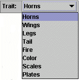
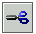

So, what is a pedigree? Think family tree. You are able to cross two individuals to see what their offspring will look like. (Geneticists call the immediate offspring the "F1 generation.") You can also cross any two members of the F1 generation to trace the inheritance of the genes to the next generation, which is called the "F2." This is a faster way to get the information than to run meiosis for each offspring that is produced!
This window looks different, right? For one thing, the organisms look like little circles and squares (if there are two sexes). The circles stand for females and the squares stand for males.
Also, there are two new tools and a new section on the menu.
The number of offspring is controlled by the "Offspring Min/Max" button. It
can be set either for a fixed number, a minimum and a maximum, or an equal number
of males and females.
If you want to look at different traits,
click on the triangle on the menu item next to the "Trait" label, then choose
the trait from the pull down menu. The organisms' symbols will reflect whether
they have the trait or not. The legend on the menu bar will tell you what each
symbol means.

Now for the tools.
You already know what the
arrow stands for -- it's the cursor. With it selected, you can click on each
organism to select it. A picture of that organism will appear along with its
chromosomes.
The X tool is the cross
tool. Click on each organism in turn and stand back. Their offspring will pop
up as symbols hanging from a bar.

You can use the scissor tool to snip one organism out, or one generation, or all of the offspring at once.